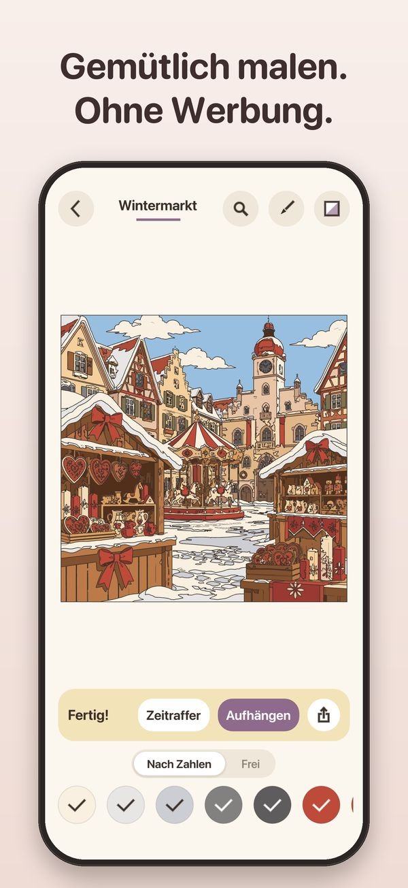
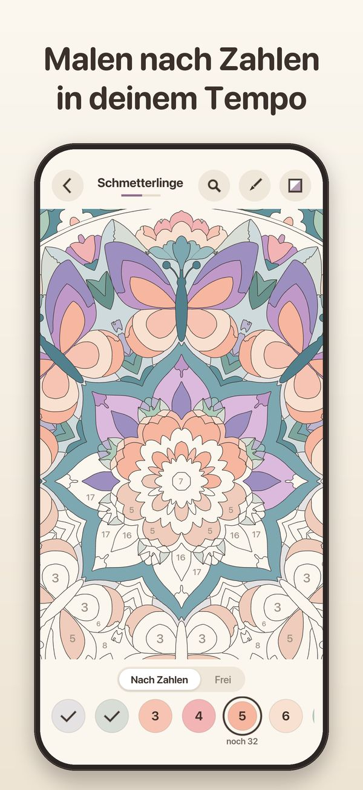
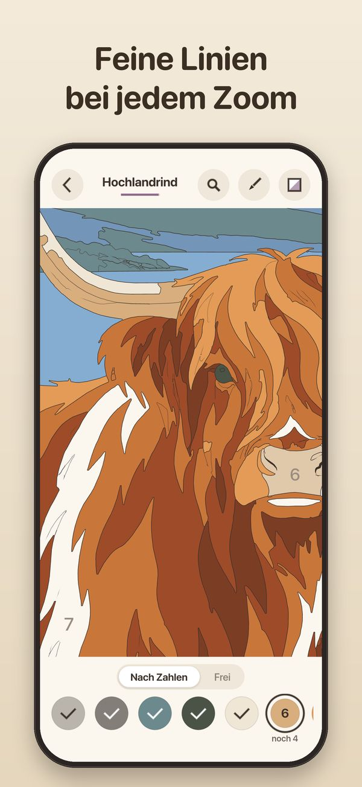
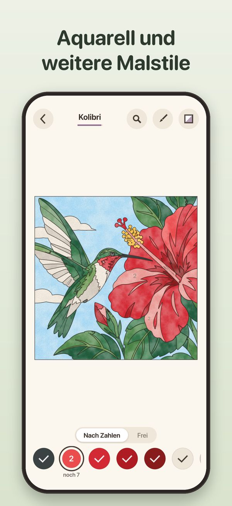
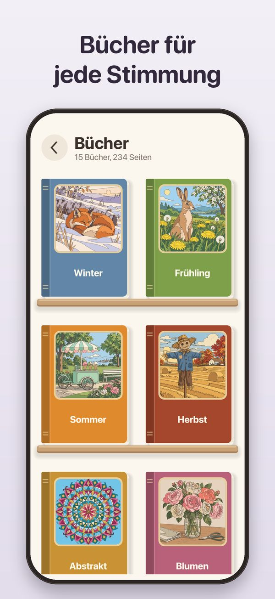
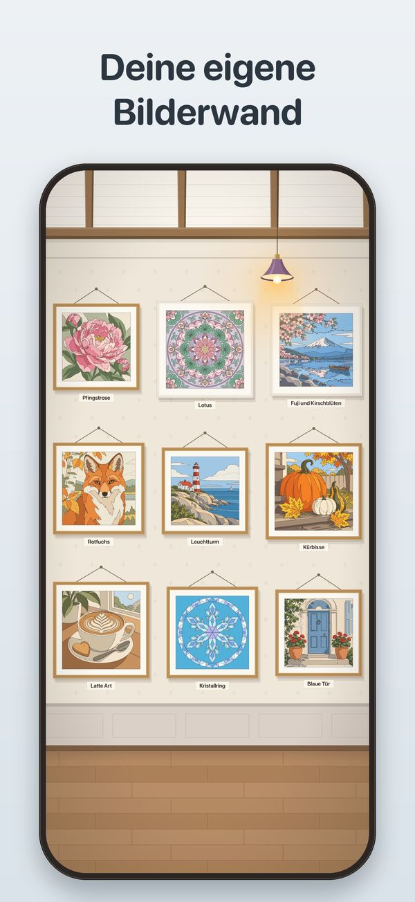

Malen nach Zahlen für Erwachsene, ganz ohne Werbung
Colorwall ist eine Ausmal-App für die Momente, in denen du runterkommen willst. Wähl ein Bild, tipp auf eine Zahl und sieh zu, wie es Fläche für Fläche lebendig wird, mit sanften Farben, leisen Klängen und ohne Timer.
Viele Ausmal-Apps zeigen nach fast jedem Bild Werbung. In Colorwall gibt es nirgends welche: keine Banner, keine Videos, keine Pop-ups. Auch kein Konto und kein Tracking. Und die Motive sind für Erwachsene gemacht: realistische, detailreiche Illustrationen statt einfacher Comic-Vorlagen.
So funktioniert Malen nach Zahlen in Colorwall
- Wähl ein Bild. Öffne ein Buch oder fang mit dem Gratis-Bild des Tages an.
- Wähl eine Farbe. Die Palette unten zeigt die Farben des Bildes mit ihren Nummern und wie viele Flächen der gewählten Farbe noch fehlen.
- Tipp auf die nummerierten Flächen. Für die kleinen zoomst du mit zwei Fingern hinein. Die App verzeiht ungenaue Tipps: Triffst du knapp neben eine offene Fläche deiner Farbe, wird sie trotzdem gefüllt, und bei verbundenen Mustern füllt ein Tipp jeden passenden Streifen.
- Mal es fertig. Ein warmes Licht zieht über das fertige Bild, ein Klang und ein haptisches Feedback feiern den Moment. Dann sieh dir den Zeitraffer an, häng das Bild an deine Wand oder teil es.
Kein Timer, kein Druck: Hör auf, wann du willst, und das Bild wartet genau dort, wo du aufgehört hast.
Colorwall auf dem iPhone: Screenshots






Nach Zahlen ausmalen oder mit eigenen Farben
Unter jedem Bild sitzt ein Schalter: Nach Zahlen oder Frei. Nach Zahlen bekommt jede Fläche die Farbe ihrer Nummer. Im Modus Frei wählst du für jede Fläche selbst eine Farbe aus der Palette und machst das Bild zu deinem eigenen.
Bilder in Leicht, Mittel und Schwer
Jedes Buch hat Bilder in drei Stufen: Leicht mit bis zu 250 Flächen für eine kurze Pause, Mittel mit bis zu 750 für einen Abend und Schwer mit noch mehr für lange, ruhige Abende.
Realistische Motive, gestochen scharf bei jedem Zoom
Jedes Bild ist eine Vektorzeichnung. Die Linien bleiben scharf, egal wie weit du hineinzoomst: das Fell eines Hochlandrinds, die Blütenblätter einer Pfingstrose, die winzigen Fenster eines Weihnachtsmarkts.
15 Malbücher für Erwachsene
234 Bilder in 15 Büchern, dazu ein Bild des Tages, ein Bild der Woche und im Dezember ein Adventskalender mit 24 weiteren.
Vier Gratis-Bücher zu den Jahreszeiten
Winter, Frühling, Sommer und Herbst sind komplett gratis, mit je neun Bildern von Leicht bis Schwer.
Elf Themenbücher
Abstrakt, Botanik · Blumen, Botanik · Bäume, Landschaften, Japan, Tiere, Ozean, Mandalas, Gemütliche Gassen, Café & Süßes und Schneeflocken, mit je achtzehn Bildern. Das erste leichte und das erste mittlere Bild jedes Buchs kannst du gratis ausprobieren.
Weihnachten und Winter ausmalen
Im kostenlosen Winter-Buch warten heiße Schokolade, ein schlafender Fuchs und eine Berghütte, und in Schneeflocken ist jede Seite eine große Schneeflocke, die du wie ein Mandala ausmalst. Im Dezember öffnet der kostenlose Adventskalender jeden Tag ein Türchen; dahinter warten unter anderem ein Lebkuchenhaus, ein Nussknacker und ein Dampfzug.
Jeden Tag ein Gratis-Bild und jede Woche ein größeres
Jeden Tag wartet ein neues Bild auf dich, gratis: gemütliche Alltagsszenen wie Tee am Fenster oder eine Leseecke. Jede Woche kommt ein größeres Bild in Schwer dazu, etwa ein Großsegler. Öffnest du ein Bild an seinem Tag oder in seiner Woche, gehört es für immer dir. Vom 1. bis 24. Dezember tritt das Türchen des Adventskalenders an die Stelle des Bilds des Tages.
Adventskalender zum Ausmalen: hinter jedem Türchen ein Gratis-Bild
Ab dem 24. November hängt ein Adventskalender auf deinem Startbildschirm, seine 24 Türchen noch geschlossen. Vom 1. bis 24. Dezember geht jeden Tag ein Türchen auf, nach dem Datum deines iPhones, und dahinter wartet ein Winter- oder Weihnachtsbild zum Ausmalen: eine Schneeeule, ein Lebkuchenhaus, ein Weihnachtsmarktstand und am 24. ein prächtiger Weihnachtsbaum mit Geschenken.
Die Bilder wachsen mit dem Advent: Türchen 1 bis 8 sind leicht, 9 bis 16 mittel und 17 bis 24 schwer. In diesen Tagen tritt das Türchen des Tages an die Stelle des Bilds des Tages. Ein Türchen verpasst? Du kannst es noch bis zum 6. Januar öffnen, und jedes Bild, das du öffnest, gehört für immer dir. Der Adventskalender ist für alle gratis.
Vier Malstile
Jeder Stil verändert, wie die Flächen beim Ausmalen aussehen: Flach klar und gleichmäßig, Buntstift, Aquarell und Gemalt mit der Struktur ihrer Technik. Flach und Buntstift sind für alle dabei, Aquarell und Gemalt gibt es mit Colorwall Plus.
Zeitraffer und deine eigene Bilderwand
Jedes fertige Bild läuft auf Wunsch als Zeitraffer noch einmal ab, in der Reihenfolge deiner Tipps, und du kannst es als Video teilen. Dann häng es auf: Jedes fertige Bild bekommt einen Rahmen an deiner eigenen Bilderwand. Sechs Papierfarben von Creme bis Lavendel verändern den Look der ganzen App; weitere schaltest du beim Malen frei.
Achtsam ausmalen, ohne Werbung und Timer
Colorwall soll dir helfen, nach einem langen Tag abzuschalten. Nichts treibt dich an, und nichts will, dass du für eine Belohnung ein Video schaust. Klänge und Haptik sind sanft, und beides lässt sich ausschalten. Deine Bilder bleiben auf deinem iPhone. Mehr dazu in der Datenschutzerklärung.
Häufige Fragen
Gibt es Malen nach Zahlen ohne Werbung?
Ja. Colorwall enthält keinerlei Werbung: keine Banner, keine Videos, keine Pop-ups, weder zwischen den Bildern noch sonst irgendwo in der App. Und das bleibt so.
Ist Colorwall kostenlos?
Colorwall kannst du gratis laden. Die vier Jahreszeiten-Bücher (Winter, Frühling, Sommer und Herbst) sind komplett gratis, ebenso das erste leichte und das erste mittlere Bild jedes weiteren Buchs, jeden Tag ein neues Bild, das Bild der Woche, der Adventskalender und die Malstile Flach und Buntstift.
Ist der Adventskalender kostenlos?
Ja. Der Adventskalender ist für alle gratis, ohne Colorwall Plus und ohne Buchkauf. Vom 1. bis 24. Dezember geht jeden Tag ein Türchen auf, ein verpasstes kannst du noch bis zum 6. Januar öffnen, und jedes Bild, das du öffnest, gehört für immer dir.
Was enthält Colorwall Plus, und was kostet es?
Colorwall Plus öffnet alle Bücher und alle Malstile, auch Aquarell und Gemalt: 4,99 € im Monat, 29,99 € im Jahr mit 7 Tagen Gratis-Test für neue Abonnenten oder einmalig 59,99 € für immer. Der App Store zeigt dir den Preis in deiner Landeswährung.
Kann ich einzelne Bücher statt eines Abos kaufen?
Ja. Jedes Themenbuch gibt es einzeln für 2,99 €. Das ist ein einmaliger Kauf und bleibt dir.
Wie kündige ich mein Abo?
Abos verwaltet Apple: iPhone-Einstellungen › dein Name › Abonnements › Colorwall. Kündige spätestens 24 Stunden vor Ende des laufenden Zeitraums, sonst verlängert es sich automatisch.
Wie stelle ich meine Käufe wieder her, etwa auf einem neuen iPhone?
Öffne in Colorwall Einstellungen › Colorwall Plus › Käufe wiederherstellen. Du musst dabei mit dem Apple Account angemeldet sein, mit dem du gekauft hast.
Funktioniert Colorwall offline?
Ja. Alle Bilder stecken in der App, du kannst also ohne Internet ausmalen. Eine Verbindung brauchst du nur, um etwas zu kaufen oder Käufe wiederherzustellen.
Auf welchen Geräten läuft Colorwall?
Colorwall ist fürs iPhone gemacht und braucht iOS 17 oder neuer.
Welche Sprachen spricht Colorwall?
18 Sprachen: Deutsch, Englisch, Französisch, Spanisch, Portugiesisch, Italienisch, Niederländisch, Polnisch, Türkisch, Ukrainisch, Indonesisch, Filipino, Vietnamesisch, Thai, Japanisch, Koreanisch, Chinesisch (vereinfacht) und Hindi. „Automatisch“ folgt deinem iPhone; ändern kannst du die Sprache unter Einstellungen › Sprache.
Wo liegen meine Bilder? Kann ich auf ein neues iPhone umziehen?
Nur auf deinem Gerät. Ein Konto gibt es nicht. Deine Bilder sind Teil deines iPhone-Backups (iCloud oder Computer): Richtest du ein neues iPhone aus einem Backup ein, kommen sie mit.
Sammelt Colorwall Daten über mich?
Kein Konto, kein Tracking, keine Analyse, keine Werbung. Nur wenn die App abstürzt oder einen internen Fehler hat, sendet sie einen anonymen technischen Bericht, damit der Fehler behoben werden kann. Der Bericht enthält keine deiner Bilder, und deine IP-Adresse wird nicht gespeichert.
Support
Fragen, Probleme oder Ideen? Schreib uns. Wir antworten meist innerhalb weniger Tage:
E-Mail: mariohaesler@protonmail.com
Nenn uns bitte dein iPhone-Modell, die iOS-Version und die App-Version (unten in den Einstellungen).
Gemacht von Cavebeer Entertainment
Colorwall kommt von Cavebeer Entertainment, einem Ein-Personen-Studio aus Berlin. Mehr aus dem Studio:
- Idle Monster Forge: Deine Monster graben Gold für dich, auch wenn du nicht da bist.
- Idle Transport Corp: Bau dein Logistik-Imperium mit Lkw, Zügen, Schiffen und Drohnen auf.
Du schreibst über Colorwall? Im Pressekit (auf Englisch) findest du Fakten, Screenshots und das Icon.